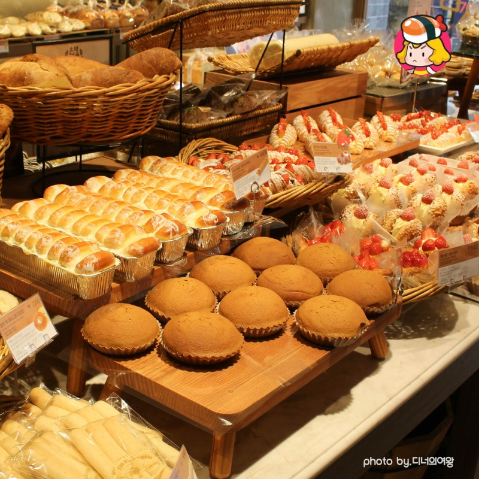
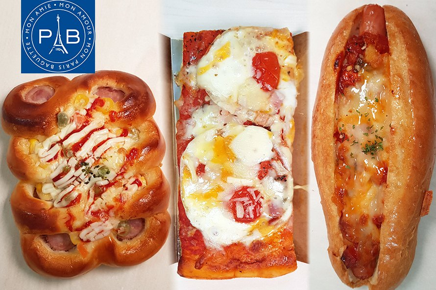

 
(가변 길이 적용할 길이 값 / 적용할 박스를 감싸고 있는 박스의 가로 너비) * 100 ) 가변 폰트 단위 - vw, vh, vmin : 브라우저의 너비, 높이중 작은 값 기준으로 글씨의 크기가 잡힌다 vmax : 브라우저의 너비, 높이중 큰 값 기준으로 글씨의 크기가 잡힌다
(640 / 1000) * 100 1. 최대 너비값 정하기 2. 요소별 너비값 px로 길이 값 구하기 3. 가변 길이값 구하는 식으로 % 로 변환하여 작성
2022 할로윈데이는 파리바게트에서 만나요
파리바게트에서 선보이는 베이글에 구운 돌